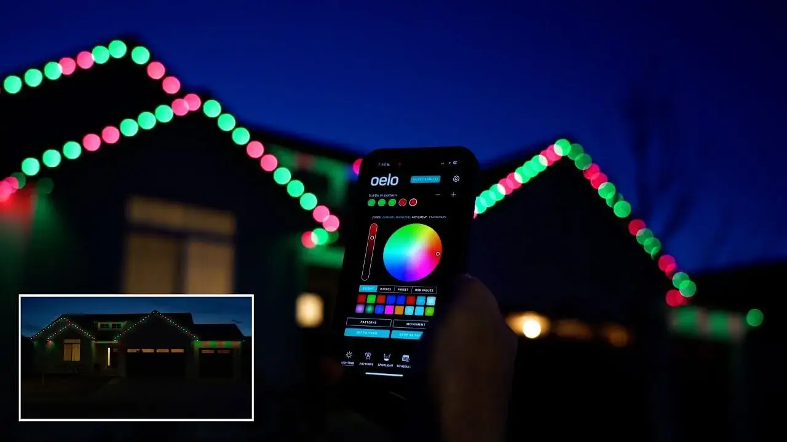

Commercial-Grade Lighting Fixtures in Houston: Bright Ideas with Texas Lit
Lighting can make or break the mood of any space. If you’ve ever walked into a business that felt dark, dull, or flat-out gloomy, you probably didn’t want to stick around for long. On the other hand, walk into a brightly lit store or restaurant, and suddenly everything feels more alive. That’s the magic of good lighting, and when it comes to businesses in Houston, commercial-grade lighting fixtures are the real heroes.
So, what exactly are commercial-grade lighting fixtures in Houston? They are high-quality, durable, and energy-efficient lighting systems built specifically for businesses, offices, warehouses, restaurants, and outdoor spaces. In simple terms, they are the tough guys of the lighting world—built to handle long hours, save you money on bills, and keep your place looking sharp.
At Texas Lit, the focus is all about making Houston businesses shine, literally. With years of experience as trusted lighting installers, Texas Lit offers top-notch outdoor commercial LED lighting designed to cut energy costs and boost curb appeal. Imagine getting brighter lights, lower bills, and a stylish setup, all in one go. That’s what they’re known for.

Why Commercial-Grade Lighting Matters in Houston
Houston is a big, bustling city that never really slows down. Businesses here run day and night, and that means lighting isn’t just decoration—it’s a must. A dim parking lot makes customers nervous, and poorly lit offices make employees sleepy. Proper lighting keeps spaces safe, inviting, and professional.
Commercial-grade fixtures are different from your typical home bulbs. They’re built tougher, last longer, and are designed to handle heavy use. For example, LEDs from Texas Lit can run for thousands of hours without giving up. That means fewer replacements, fewer headaches, and more time focusing on your actual business instead of climbing ladders to change bulbs.
There’s also the energy factor. Houston summers are hot enough to make you sweat just by looking outside, and electricity bills can easily skyrocket. Traditional lights waste a lot of power and heat. Commercial LED fixtures, however, are built to use less energy while still giving off bright, consistent light. That translates to savings on your monthly bills, which every business owner can appreciate.
The Texas Lit Advantage
Now, let’s talk about what makes Texas Lit stand out when it comes to commercial-grade lighting fixtures in Houston. Plenty of companies sell lights, but not everyone knows how to install them properly or design systems that actually fit the needs of a business. That’s where Texas Lit shines (pun fully intended).
The company specializes in outdoor commercial LED lighting. This means they know how to handle the unique challenges of Houston weather. Rain, heat, humidity—these lights are built to survive it all. If you’ve ever had a cheap fixture rust out or fail after one storm, you’ll understand why durability matters so much here.
Texas Lit also focuses on energy-efficient designs. They don’t just throw in random lights and call it a day. Instead, they design a system that gives you maximum brightness while keeping energy use low. For businesses, that’s a win-win: you get the look and safety you need without burning money on wasted electricity.
Outdoor Lighting: Making a Business Stand Out
Outdoor commercial lighting is one of the main services Texas Lit provides, and for good reason. When customers pull up to your business, the first thing they see is the outside. If it’s dark, poorly lit, or looks sketchy, they might think twice before walking in.
Bright, well-placed outdoor lights not only make your business more attractive but also add a sense of security. Parking lots, pathways, and entryways feel safer when they’re well lit. In a big city like Houston, safety is a major selling point for any business.
Texas Lit installs LED fixtures that give off consistent, strong lighting without being harsh. These lights highlight your building, signage, and landscaping in a way that makes your property stand out. Imagine a restaurant patio glowing warmly at night, or a retail store front that catches attention even from the road. That’s the power of good outdoor lighting.
Energy Efficiency: The Secret to Lower Bills
If you’ve lived in Houston long enough, you know the electric bill during summer can hit you harder than a Houston heatwave. Businesses especially feel the pinch because lights are often running for 12 or more hours a day. That’s where commercial LED lighting fixtures really show their value.
LEDs use much less energy compared to traditional bulbs. We’re talking savings of up to 70% in many cases. Multiply that across dozens or even hundreds of fixtures in a large business, and the savings start looking like real money. For a business owner, that’s cash that can go back into growth instead of paying for wasted electricity.
The longer lifespan of LEDs also adds to the savings. Traditional bulbs burn out quickly, leaving you with replacement costs and maintenance hassles. Commercial-grade LEDs, however, keep going and going. Some can last tens of thousands of hours, which in real-world terms means years of use before you even think about replacing them.
Creating the Right Atmosphere with Lighting
Lighting is more than just flipping a switch. It sets the mood, influences behavior, and can even boost sales. Retailers in Houston know this well—bright, inviting lights encourage customers to browse longer and spend more. Restaurants use warm tones to create cozy spaces that make diners linger (and maybe order dessert). Offices use crisp, clear lighting to keep employees alert and focused.
Texas Lit understands these needs and installs lighting systems that match the vibe of each business. You don’t want a fine-dining restaurant lit up like a football stadium, and you don’t want a warehouse lit like a candle-lit dinner. Finding that balance is key, and that’s where professional installers make a difference.
Why Houston Businesses Trust Texas Lit
Trust is a big deal when you’re hiring someone to handle a major upgrade like lighting. Houston business owners want reliability, quality, and professionalism. Texas Lit has built its reputation by delivering on all three.
Local businesses appreciate working with a team that understands the unique challenges of Houston’s environment. They know which fixtures hold up against humidity, which systems save the most on bills, and how to design lighting that fits the character of each business.
Final Thoughts
Commercial-grade lighting fixtures in Houston aren’t just about brightening a space. They improve safety, save money, and make businesses look more professional. With Texas Lit, you get all the benefits of durable, energy-efficient LED systems installed by a team that knows Houston inside and out.
So, if you’re in Houston and your lighting feels more like a flashlight from the 90s than a professional setup, maybe it’s time to give Texas Lit a call. After all, good lighting doesn’t just brighten your business—it helps it shine.